Rola Pielęgniarek Operacyjnych w Zespołach Transplantacyjnych
-
Szanowni Państwo, Drogie Koleżanki i Koledzy!
Zamysłem tej konferencji jest promowanie działań transplantologów i dotarcie do jak najszerszej rzeszy pielęgniarek operacyjnych, pracujących w szpitalach Dawcy, oraz szpitalach zajmujących się transplantologią na co dzień.
Absolwent Akademii Medycznej w Warszawie (1979). Specjalista chirurgii ogólnej, transplantologii klinicznej i zdrowia publicznego. Doktorat n. med.- 1985 Habilitacja – 1996 Tytuł profesora zwyczajnego - 2006
Kierownik Zakładu Pielęgniarstwa Chirurgicznego, Transplantacyjnego i Leczenia Pozaustrojowego od 2006 r.
Klinika Chirurgii Ogólnej i Transplantacyjnej od 2003 i nadal ; poprzednio od 1980 - Klinika Chirurgii Ogólnej i Chorób Wątroby
Dziekan Wydziału Nauki o Zdrowiu WUM – 2012 - 2020
Prezes Polskiego Towarzystwa Hepatologicznego
Współredaktor naczelny „Annals of Transplantation” (IF-1,252)
Członek: PTT, IHPBA, ILTS
Autor i współautor: 216 prac naukowych, 36 rozdziałów i podrozdziałów w 21 książkach, IF 49,597, Cytowania 498, Indeks Hirscha 12
Tematyka: guzy wątroby, transplantacja wątroby (zespół przeprowadzający pierwsze udane LTx wątroby u dorosłych), marskość wątroby, zakrzepica żył trzewnych
Nagrody:
- Ministra Zdrowia za wdrożenie programu przeszczepiania wątroby
- PTT za wdrożenie i realizację programu LTx wątroby
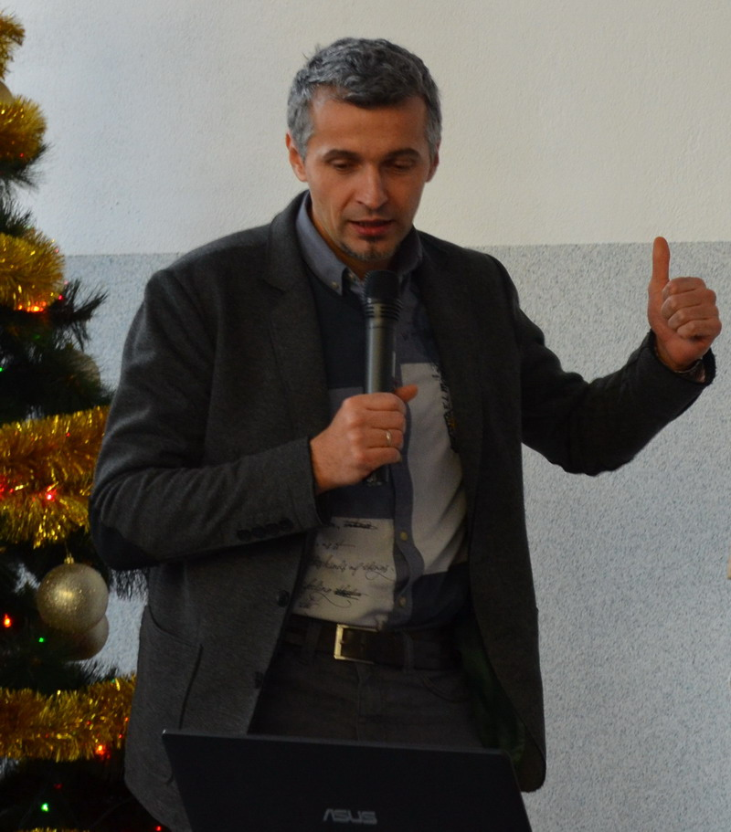
Maciej Kosieradzki
Kierownik Katedry i Kliniki Chirurgii Ogólnej i Transplantacyjnej Szpitala Klinicznego Dzieciątka Jezus w Warszawie.
Absolwent Akademii Medycznej w Warszawie (1996). Specjalista chirurgii ogólnej i transplantologii klinicznej. Doktor habilitowany nauk medycznych.
Kierownik Katedry i Kliniki Chirurgii Ogólnej i Transplantacyjnej Szpitala Klinicznego Dzieciątka Jezus w Warszawie.
Konsultant Województwa Świętokrzyskiego w dziedzinie transplantologii.
Tytuł doktora nauk medycznych uzyskany na podstawie pracy pt: "Rola reaktywnych form tlenu w niedokrwiennym uszkodzeniu przeszczepianej nerki".
Członek: European Society for Organ Transplantation, International Society for Organ Donation and Procurement
Polskiego Towarzystwa Transplantacyjnego, The Transplantation Society, Towarzystwa Chirurgów Polskich, Sociedad Espanola de Transplante Hepatico
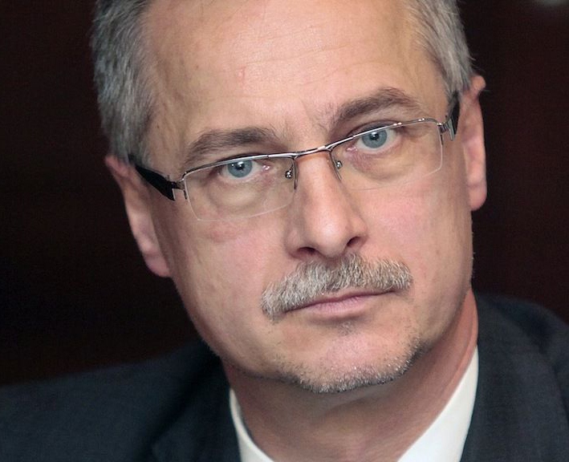
Roman Danielewicz
Wydział Nauki o Zdrowiu WUM
Absolwent Akademii Medycznej w Warszawie (1985). Zatrudniony w Klinice Chirurgii Ogólnej i Transplantacyjnej w Szpitalu Klinicznym Dzieciątka Jezus oraz w Zakładzie Pielęgniarstwa Chirurgicznego, Transplantacyjnego i Leczenia Pozaustrojowego, Wydział Nauki o Zdrowiu WUM.
Specjalista chirurgii ogólnej, transplantologii klinicznej i zdrowia publicznego. Uzyskał stopień doktora nauk medycznych w 1992 r., habilitacja w 2000 r. (obie prace z zakresu transplantologii). Tytuł profesora uzyskał w 2010 r.
Odbył staże zagraniczne w USA (University of Wisconsin Madison), Wielkiej Brytanii (staż The Royal College of Surgeons of England), Wiedniu (Akademischer Krankenhaus of Stadt Vien). W latach 2002-2011 Dyrektor Departamentu Nauki i Szkolnictwa Wyższego w Ministerstwie Zdrowia. W latach 2011-2016 Dyrektor Centrum Organizacyjno-Koordynacyjnego do spraw Transplantacji Poltransplant.
Główny obszar zainteresowań klinicznych i naukowych to chirurgia ogólna i transplantologia kliniczna.
Autor i współautor ponad 45 oryginalnych publikacji naukowych w polskich i międzynarodowych czasopismach, ponad 65 doniesień zjazdowych. Członek redakcji Annals of Transplantation.. Członek Towarzystwa Chirurgów Polskich, Polskiego Towarzystwa Transplantacyjnego (Członek Zarządu, Prezes Elekt na lata 2019-2021), Europejskiego Towarzystwa Przeszczepiania Narządów (ESOT), Światowego Towarzystwa Transplantacyjnego (TTS), Międzynarodowego Towarzystwa Przeszczepiania Wątroby (ILTS), Polskiego Towarzystwa Hepatologicznego, Polskiej Unii Medycyny Transplantacyjnej. Członek Krajowej Rady Transplantacyjnej (2014-2018).
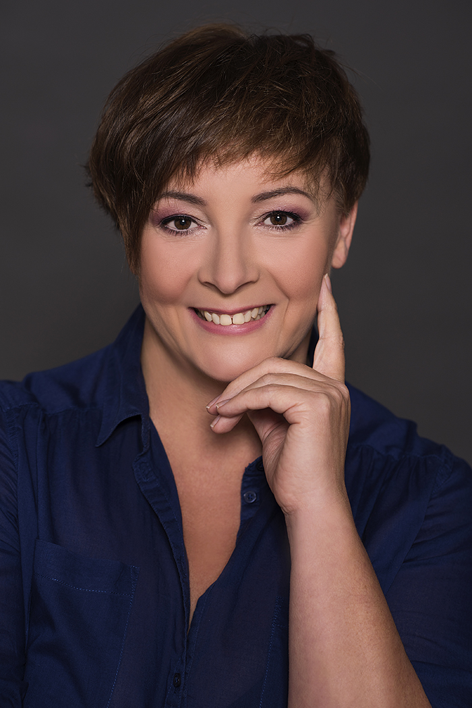
Marta Kotomska
Szpital Kliniczny Dzieciątka Jezus w Warszawie
Magister pielęgniarstwa, specjalistka w dziedzinie pielęgniarstwa operacyjnego, instrumentariuszka w Katedrze i Klinice Chirurgii Ogólnej i Transplantacyjnej, w Szpitalu Klinicznym Dzieciątka Jezus, aktywny członek zespołu pielęgniarek operacyjnych uczestniczących w pełnym zakresie procedur chirurgicznych i transplantacyjnych, doktorantka Wydziału Nauki o Zdrowiu Warszawskiego Uniwersytetu Medycznego, opiekun grup studenckich Warszawskiego Uniwersytetu Medycznego, współopiekun Pielęgniarskiego Koła Naukowego SKN BeLivers, przy Zakładzie Pielęgniarstwa Chirurgicznego i Leczenia Pozaustrojowego WUM, kierownik specjalizacji pielęgniarstwa operacyjnego organizowanego przez Warszawską Okręgową Izbę Pielęgniarek i Położnych, wykładowca w dziedzinie pielęgniarstwa operacyjnego, współtwórczyni procedur i standardów transplantacyjnych i opieki nad chorym na bloku operacyjnym, autorka i współautorka prac i plakatów przedstawianych na Sympozjach Naukowych, Zjazdńch Transplantacyjnych, Hepatologicznych i Konferencjach Naukowych, współautorka książki pt. 'Pielęgniarstwo transplantacyjne', „Encyklopedii starzenia się, starości i niepełnosprawności”. Prowadzi stronę internetową dla studentów pielęgniarstwa 'SKN BeLivers Blok Operacyjny, Chirurgia, Transplantologia dla studentów', oraz fanpage 'Zdaniem Pielęgniarki'
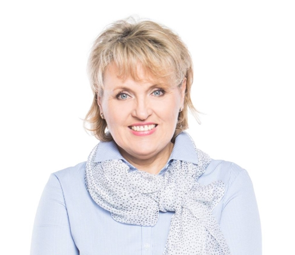
Anna Ośińska
Prelegenci
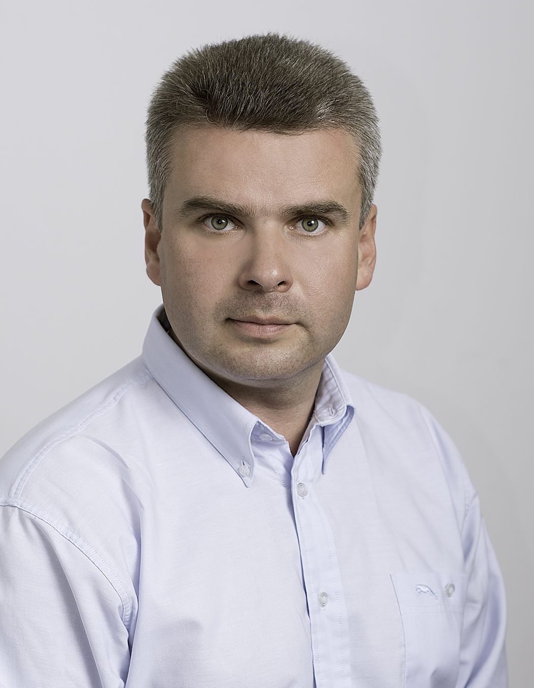
Paweł Strzelec
Sędzia Sądu Dyscyplinarnego OIRP w Lublinie
radca prawny, absolwent Wydziału Prawa i Administracji UMCS w Lublinie, aplikacja prokuratorska zakończona egzaminem prokuratorskim. Wieloletni nauczyciel akademicki, (m. in. Katedra Postępowania Karnego UMCS w Lublinie, Wyższa Szkoła Biznesu w Radomiu, Puławska Szkoła Wyższa, Szkoła Wyższa im. Bogdana Jańskiego w Warszawie). Od 2000 r. prowadzi autorskie szkolenia z prawa medycznego dla przedstawicieli zawodów medycznych oraz kadry zarządzającej podmiotów leczniczych. Autor kilkunastu publikacji naukowych z zakresu postępowania karnego, prawa nieletnich, prawa medycznego i ubezpieczeń. Sekretarz Komisji Prawniczej PAN/ Oddział w Lublinie. Sędzia Sądu Dyscyplinarnego OIRP w Lublinie.
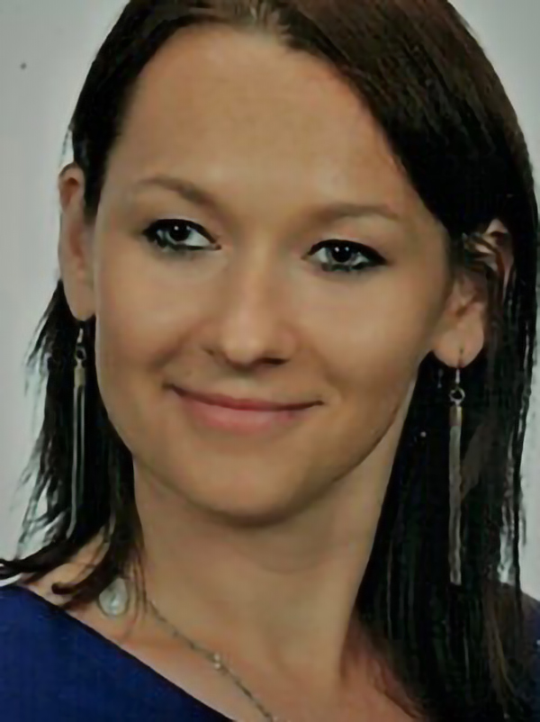
Edyta Karpeta
Szpital Kliniczny Dzieciątka Jezus w Warszawie
Regionalny koordynator transplantacyjny w Katedrze i Klinice Chirurgii Ogólnej i Transplantacyjnej Szpitala Klinicznego Dzieciątka Jezus w Warszawie, magister pielęgniarstwa, instrumentariuszka. Absolwentka Wydziału Nauk o Zdrowiu oraz Szkolenia Podyplomowego dla Koordynatorów Transplantacyjnych Uniwersytetu Medycznego w Warszawie. Doktorancka Wydziału Nauk o Zdrowiu Uniwersytetu Medycznego w Warszawie, wykładowca w dziedzinie transplantologii. Organizatorka i prelegent konferencji naukowo-szkoleniowych, Programu Szkoleniowego Podstaw Dawstwa Narządów ETPOD (European Training Program on Organ Donation) oraz szkoleń z zakresu transplantologii. Autorka i współautorka prac i plakatów prezentowanych na Kongresach i Zjazdach Transplantacyjnych. Autorka i współautorka publikacji naukowych z zakresu medycyny transplantacyjnej
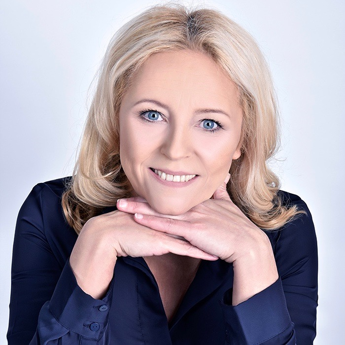
Aldona Michalak
Szpital Kliniczny Dzieciątka Jezus w Warszawie
Magister pielęgniarstwa, specjalistka w dziedzinie pielęgniarstwa operacyjnego, instrumentariuszka w Katedrze i Klinice Chirurgii Ogólnej i Transplantacyjnej, w Szpitalu Klinicznym Dzieciątka Jezus, aktywny członek zespołu pielęgniarek operacyjnych uczestniczących w pełnym zakresie procedur chirurgicznych i transplantacyjnych. Pielęgniarka operacyjna w bloku ginekologii i chirurgii onkologicznej Specjalistycznego Szpitala im. Św. Rodziny w Warszawie. Doktorantka Wydziału Nauki o Zdrowiu Warszawskiego Uniwersytetu Medycznego, opiekun grup studenckich Warszawskiego Uniwersytetu Medycznego, współopiekun dydaktyczny Pielęgniarskiego Koła Naukowego SKN BeLivers, przy Zakładzie Pielęgniarstwa Chirurgicznego i Leczenia Pozaustrojowego WUM, autorka i współautorka prac i plakatów przedstawianych na Sympozjach Naukowych, Zjazdach Transplantacyjnych, Hepatologicznych i Konferencjach Naukowych, współautorka „Encyklopedii starzenia się, starości i niepełnosprawności
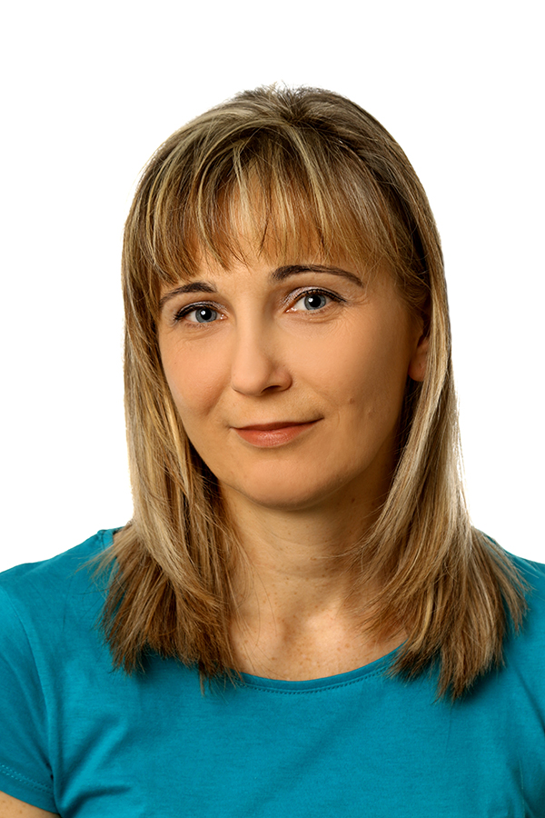
Aleksandra Kozłowska
Szpital Wojewódzki w Bielsku-Białej
Magister pielęgniarstwa - absolwentka Wydziału Nauk o Zdrowiu Akademii Techniczno- Humanistycznej w Bielsku- Białej. Pielęgniarka anestezjologiczna w Oddziale Anestezjologii i Intensywnej Terapii Szpitala Wojewódzkiego w Bielsku- Białej. Autorka i współautorka prac i publikacji podejmujących tematykę transplantologii, autorka pracy na temat żywego dawstwa nerki wyróżnionej przez PFRON w XIII edycji konkursu 'Otwarte Drzwi'. Ukończyła Szkolenie Podyplomowe Koordynatorów Transplantacyjnych na Warszawskim Uniwersytecie Medycznym
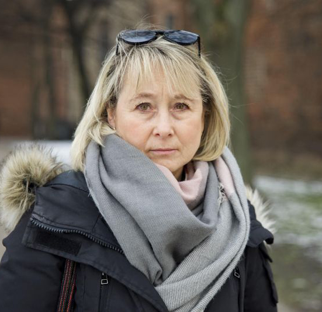
Jolanta Kruczkowska
Fundacja im. Bartka Kruczkowskiego ORGANiści
Ekonomistka, mama dawcy, a od 2013 roku współzałożycielka i Prezes Fundacji im. Bartka Kruczkowskiego ORGANiści. Organizatorka wielu akcji promujących świadome dawstwo narządów i tkanek m.in. ogólnopolskich, corocznych rajdów rowerowych dla transplantacji. Prowadzi stronę internetową www.organisci.org , spotkania z rodzicami, którzy również wyrazili zgodę na oddanie organów swoich dzieci do przeszczepu
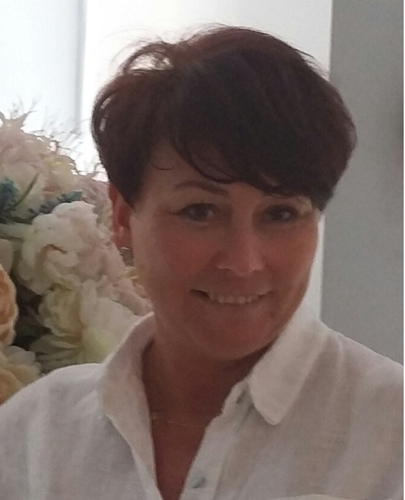
Iwona Żurecka – Sobczak
Przewodnicząca Komisji Pielęgniarek Operacyjnych w Okręgowej Izbie Pielęgniarek i Położnych w Łodzi.
Magister pielęgniarstwa, absolwentka Wydziału Prawa i Administracji Uniwersytetu Jagiellońskiego na kierunku Prawo Medyczne i Bioetyka oraz absolwentka Wyższej Szkoły Bankowej na kierunku Organizacja i Zarządzanie w Ochronie Zdrowia. Specjalista w dziedzinie pielęgniarstwa operacyjnego oraz specjalista w dziedzinie pielęgniarstwa chirurgicznego. Instrumentariuszka w Klinice Neurochirurgii, Chirurgii Kręgosłupa i Nerwów Obwodowych. Przewodnicząca Komisji Pielęgniarek Operacyjnych w Okręgowej Izbie Pielęgniarek i Położnych w Łodzi. Wykładowca w dziedzinie pielęgniarstwa operacyjnego i chirurgicznego, współautorka i autorka procedur, i standardów w zakresie jakości pracy pielęgniarki operacyjnej na bloku operacyjnym; prac i plakatów przedstawianych na Zjazdach PTNCH z sekcją pielęgniarek neurochirurgicznych. Organizatorka dwóch konferencji Naukowo- Szkoleniowych dla pielęgniarek operacyjnych oraz organizatorka i prelegentka lokalnych szkoleń w zakresie pielęgniarstwa operacyjnego.
Izabela Szwed
Wojewódzki Szpital Specjalistyczny we Wrocławiu
Położna operacyjna w Wojewódzkim Szpitalu Specjalistycznym, Ośrodek Badawczo-Rozwojowy we Wrocławiu. Przewodnicząca Zespołu ds pielęgniarstwa operacyjnego, członek Zarządu Ogólnopolskiego Stowarzyszenia Instrumentariuszek. Autorka i współautorka wielu prac i plakatów przedstawianych na Kongresach, Konferencjach i Sympozjach Naukowych. Autorka i współautorka wielu publikacji naukowych. Specjalistka w dziedzinie chirurgii małoinwazyjnej – obrotowej
Jolanta Jagoda
Instytut Pomnik Centrum Zdrowia Dziecka
Magister pielęgniarstwa, specjalista w dziedzinie pielęgniarstwa operacyjnego, pielęgniarka operacyjna w Instytut Pomnik Centrum Zdrowia Dziecka.
Wykładowca w dziedzinie pielęgniarstwa operacyjnego, autorka i współautorka prac i plakatów przedstawianych na Sympozjach Naukowych, Zjazdach Transplantacyjnych oraz Konferencjach Pediatrycznych.
Absolwentka WUM, wydziału Nauk o Zdrowiu oraz studiów podyplomowych „Etyka praktyki lekarskiej i opieki medycznej (ELiOM)” organizowanych przez Warszawski Uniwersytet Medyczny, Instytut Matki i Dziecka oraz Université Paris-Est Marne-la-Vallée.
Marzena Witkowska
Szpital Kliniczny Dzieciątka Jezus w Warszawie
Magister pielęgniarstwa, absolwentka Wydziału Nauki o Zdrowiu Warszawskiego Uniwersytetu Medycznego. Dotychczasowe doświadczenie zawodowe zdobyła w trakcie wieloletniej pracy w Katedrze i Klinice Chirurgii Ogólnej i Transplantacyjnej Szpitala Klinicznego Dzieciątka Jezus w Warszawie. Uczestnik konferencji o tematyce transplantacyjnej i chirurgicznej.
Dorota Bartnik
Instytut Kardiologii w Aninie
Magister pielęgniarstwa, specjalista pielęgniarstwa operacyjnego
Całe życie zawodowe instrumentariuszka
Oddziałowa Bloku operacyjnego w Instytucie Kardiologii w Aninie
Od 25 lat pracuje w instytucie Kardiologii
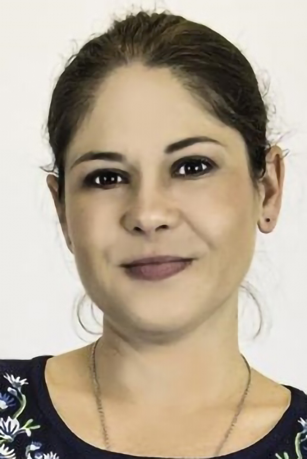
Małgorzata Rudnik
Fundacja Badań i Rozwoju Nauki
Magister ekonomii oraz dyplomowany Coach zdrowia i żywienia
Pracuje w Fundacji Badań i Rozwoju nauki przy projekcie bionicznej trzustki. Autorka artykułów na blogu Fundacji o problemach związanych z codziennym życiem z cukrzycą i nie tylko.
W 2010r. przeszła przeszczep trzustki w Klinice Chirurgii Ogólnej i Transplantacyjnej Szpitala Klinicznego Dzieciątka Jezus w Warszawie. W 2017r. uczestniczyła w organizacji i promocji ogólnopolskiej kampanii "Ogarnij cukier" dla osób chorych na cukrzycę finansowanej przez Ministerstwo Zdrowia oraz Fundacje Badań i Rozwoju Nauki. Pomaga rodzicom dzieci z cukrzycą oraz osobom z cukrzycą w odnalezieniu sie w nowej sytuacji jaką jest diagnoza cukrzyca. Jest skarbnicą wiedzy dla osób po przeszczepie trzustki.
Od 8 lat aktywnie wspiera rozwój transplantologii w Polsce.
Klaudia Smyrek
Studentka Warszawskiego Uniwersytetu Medycznego na kierunku Pielęgniarstwo. Obecnie na III roku studiów licencjackich. W roku akademickim 2017/2018 sekretarz Studenckiego Koła Naukowego „BeLivers” Pielęgniarstwa Chirurgicznego i Transplantacyjnego przy Klinice Chirurgii Ogólnej i Transplantacyjnej WUM.
Karolina Sobeczek
Szpital Kliniczny Dzieciątka Jezus w Warszawie
Studentka Warszawskiego Uniwersytetu Medycznego na kierunku Pielęgniarstwo. Obecnie na III roku studiów licencjackich. W roku akademickim 2017/2018 sekretarz Studenckiego Koła Naukowego „BeLivers” Pielęgniarstwa Chirurgicznego i Transplantacyjnego przy Klinice Chirurgii Ogólnej i Transplantacyjnej WUM.